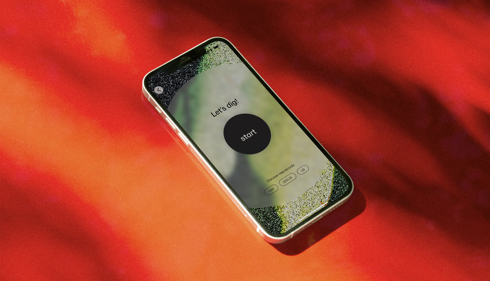
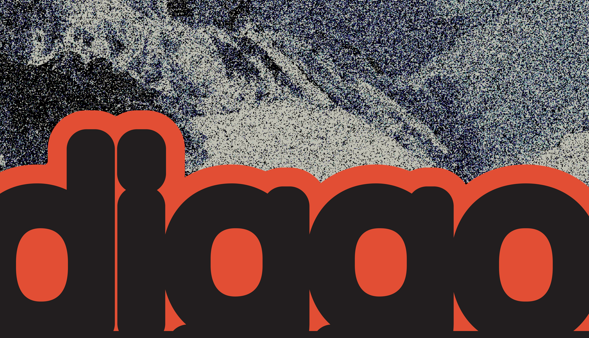
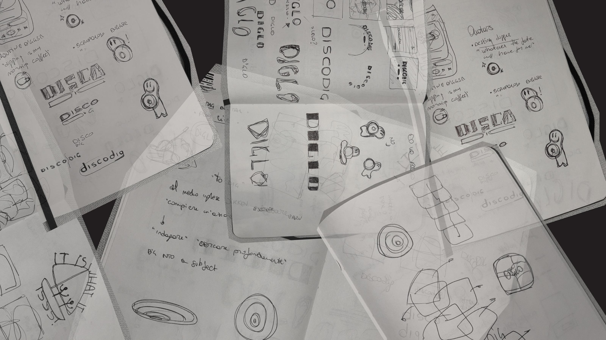
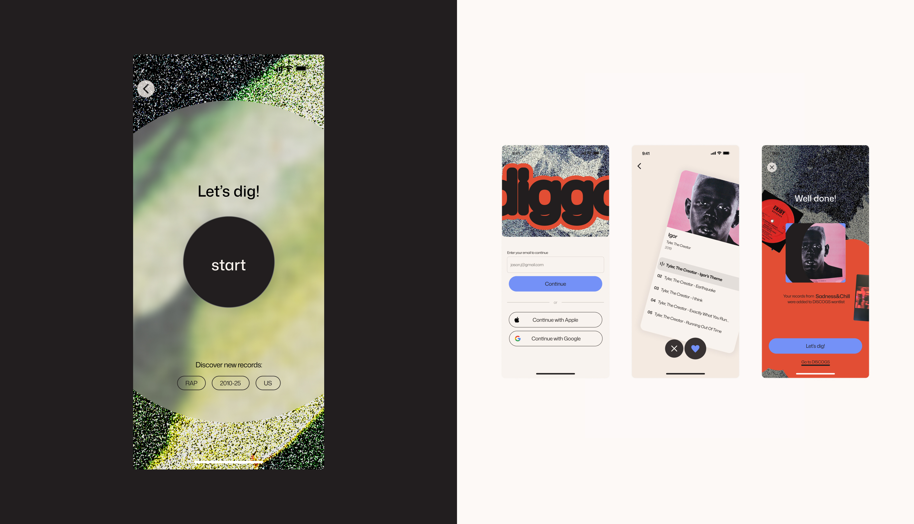
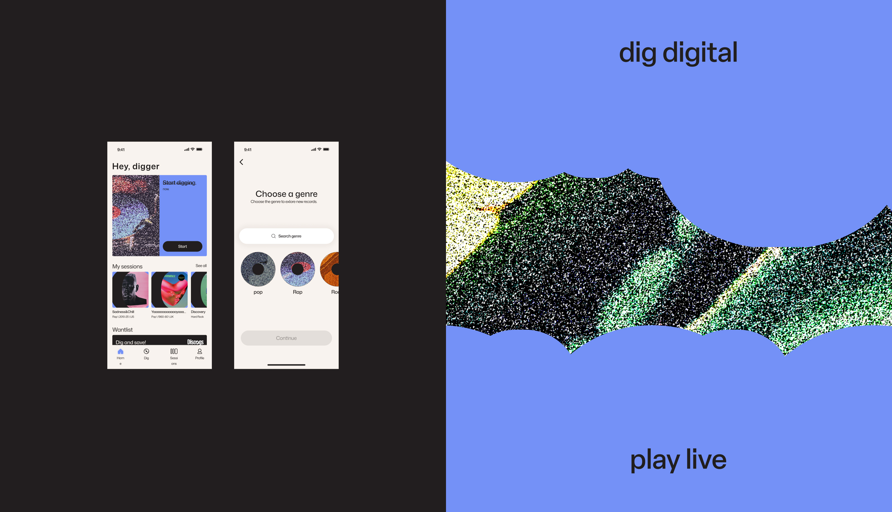
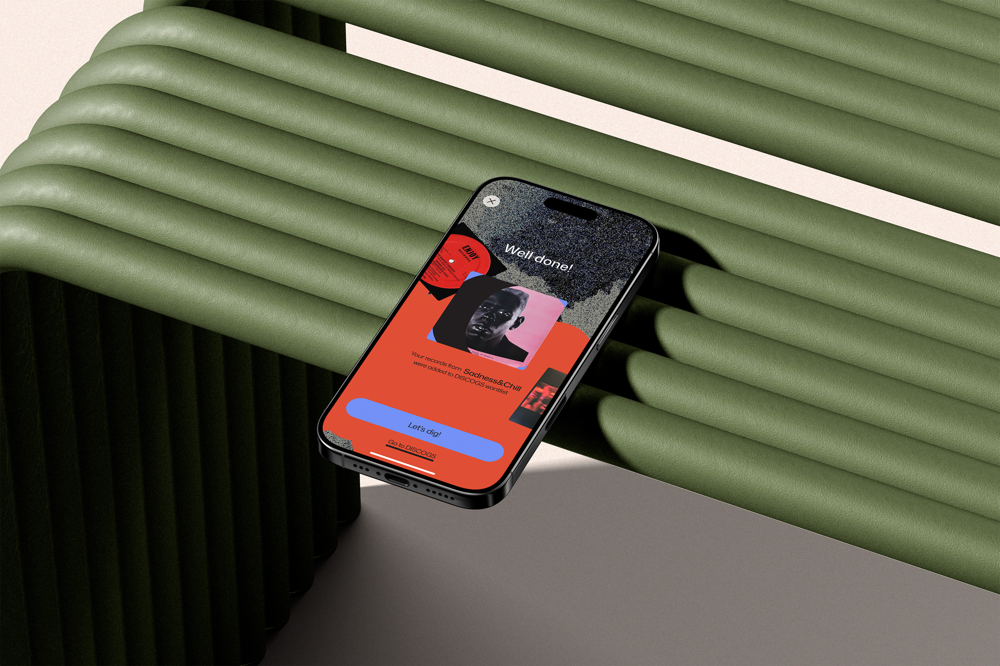
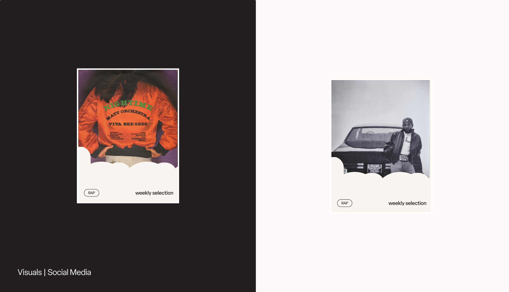
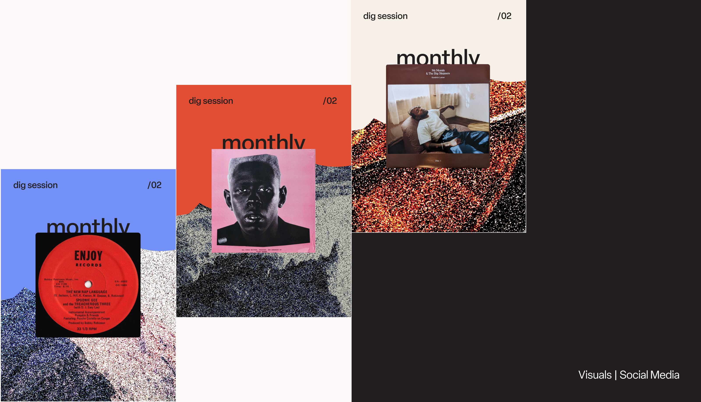
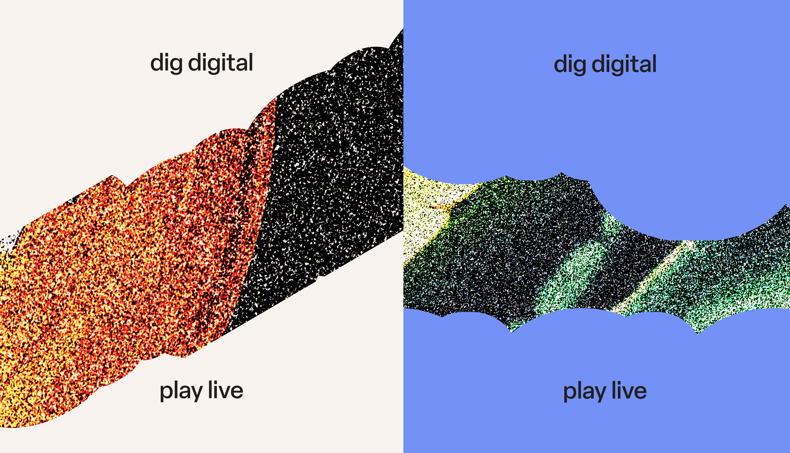

Diggo is a mobile application dedicated to discovering and exploring vinyl music. For the founders of Diggo, I designed the app end-to-end, leading UX design, UI testing, and the visual direction of the overall communication.

The initial premise was compelling: enabling the discovery of vinyl music through a digital experience that feels surprising and innovative. The research phase, structured across multiple stages, included: understanding the project’s state of the art, competitor and adjacent landscape analysis, and in-depth user research leading to the identification of target audiences, goals, values, and business objectives. The outcome of this phase took shape in the project plan and the definition of the naming.

The initial design phase was grounded in the insights gathered during research. After defining both short- and long-term goals, I conducted an early user analysis focused on expectations, physical experience, intentions, and pain points. During this phase, I structured the app architecture, mapped user flows, and defined the overall user experience. In parallel, I developed the first iteration of styling and visual direction.

The testing phase proved to be the most challenging, insightful, and valuable part of the project. It involved engaging with an audience deeply attached to the physical experience of vinyl, with well-established habits and specific needs. I tested every stage of the process—from wireframes and flows to the overall experience and individual UI features.

The app gradually took shape and structure, integrating insights from iterative testing into its features and final styling—blending a vintage sensibility with contemporary lines and interactions. The result is an experience designed to complement the physical discovery of vinyl music, adding a layer of dynamism and surprise.

The communication has been developed as an extension of the product’s visual universe and strategically structured to deliver added-value content to users through media channels.



With future releases, the project is set to expand key functionalities, as well as refine and redefine certain existing areas of use. The expressive and value-driven potential of the project lies precisely in the cultural, personal, and experiential impact that a digital product can achieve when it intersects with passionate, physical rituals—like the pursuit of vinyl music.
Individual project: Camilla De Amicis